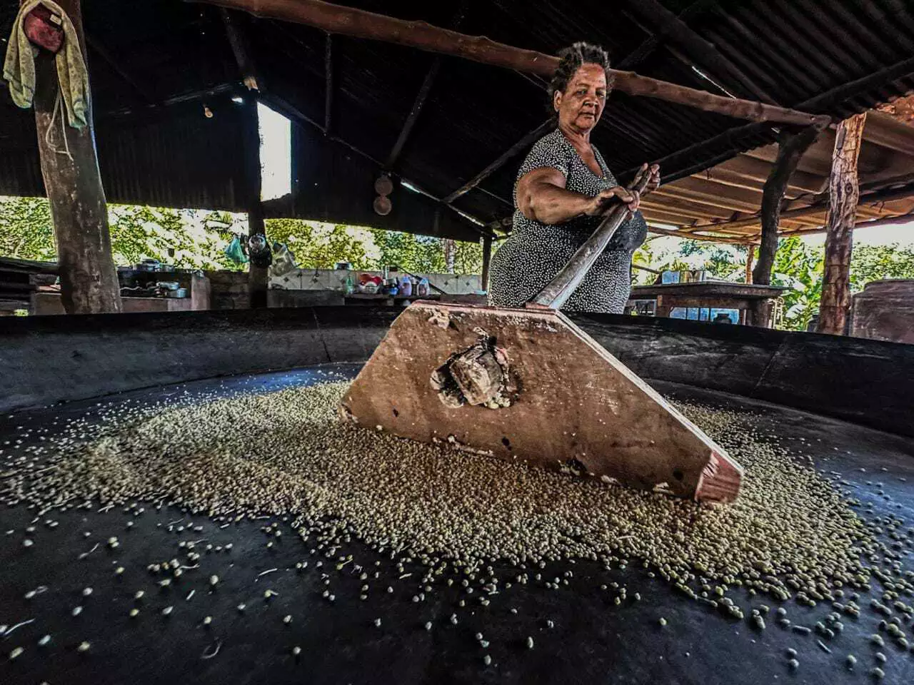
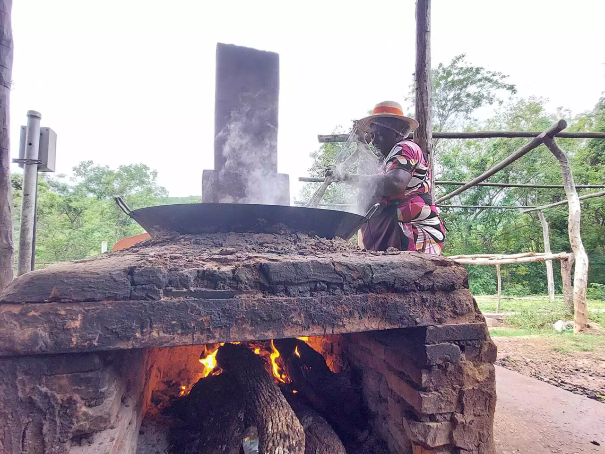
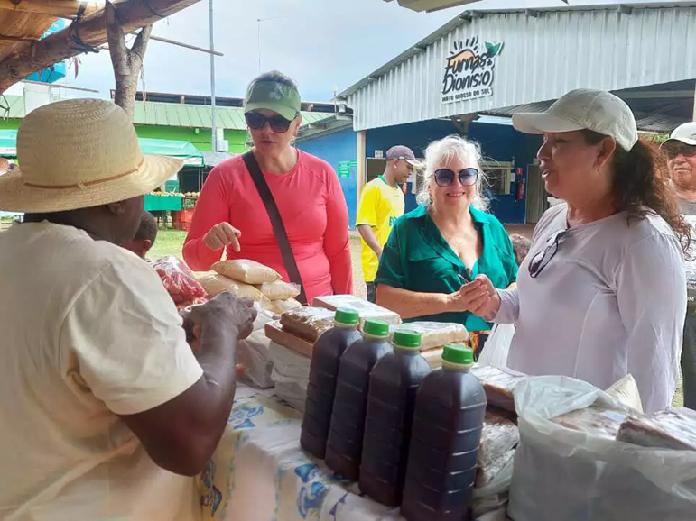
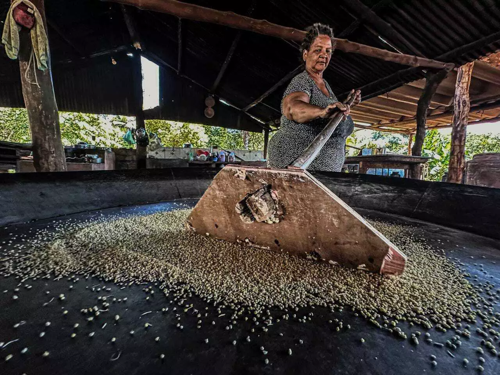
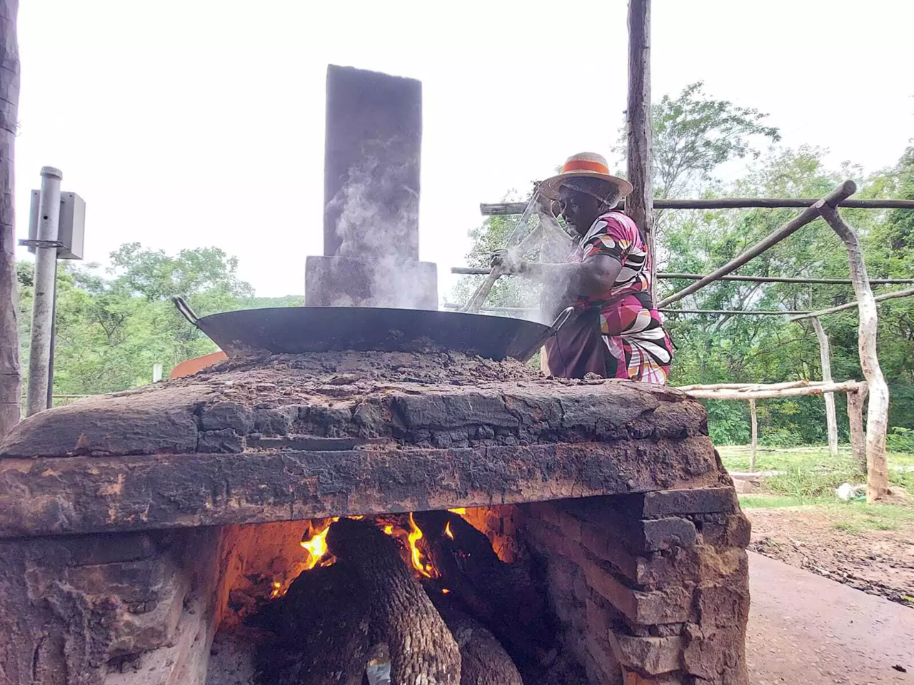
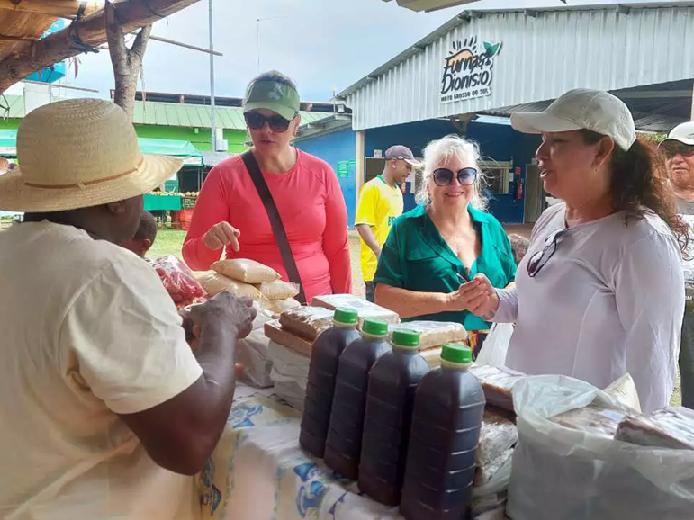

Bem-vindo à Comunidade Quilombola Furnas do Dionísio
Valorizar a memória, a cultura e a cozinha tradicional da nossa comunidade.
Agende uma visita 





Identidade e Tradição
Furnas do Dionísio é uma comunidade quilombola localizada em Campo Grande — MS, preservando saberes e práticas ancestrais.